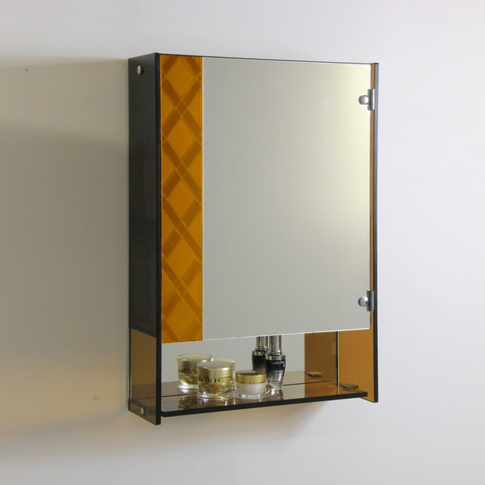

Semakin berkembangnya dunia pembangunan, karenanya hadir banyak material penambah yang melengkapi estetika sebuah banguanan. Kita tak jarang menemui material-material hal yang demikian pada gedung, kantor, industry pun rumah hunian.
Variasi-ragam kaca diantara lain kaca tempered, kaca shower, railing kaca, kanopi kaca dan masih banyak lagi. Tidak hanya material kaca sekarang juga terdapat material kayu atau parket lantai kayu jati.
Distributor & Supplier Pintu Kaca di Bekasi

Anda dapat pilih desain seperti apa yang Anda sukai. Tidak Anda menyukai dengan pintu kaca Bekasi dengan pigura, Anda dapat pilih apakah frame tersebut terbuat dari bahan kayu atau aluminium. Tenaga jenis kaca yang dapat Anda pilih untuk pintu kaca Bekasi Anda seperti kaca tempered yang sedang booming atau kaca non-tempered yang harganya lebih relatif murah. Desain hal yang demikian bisa disesuaikan dengan konsep properti Anda. Sekarang tidak kalah penting lagi ialah pemilihan kaca. Dalam hal ini, terdapat beberapa ragam kaca dengan kualitas yang terbaik. Sekarang paling banyak diminati ketika ini adalah kaca tempered karena jauh lebih kuat dan tahan lama.
Anda bisa memiliki pintu kaca Bekasi favorit anda sekarang juga dengan mengunjungi dis.or.id. Observasi Ukuran serta ketebalan menyesuikan dengan keinginan Anda.
Kaca yang di gunakan yaitu kaca dengan kwalitas terbaik.
Info Pemesanan Selengkapnya
Google Maps: https://www.google.com/maps/d/u/0/viewer?mid=1Oev1fV01o8gQSuJ72jMMShl0CllevHqY&ll=-7.27380280025364%2C112.65243155000007&z=18
Event: https://www.facebook.com/events/174522916469442/
Portfolio Produk: https://www.facebook.com/1681607345472479/photos/?tab=album&album_id=1712632585703288
Jasa Pemasangan Railing Kaca

Railing kaca menjadi salah satu bagian yang akan membuat terlihat sangat minimalis. Tak konsep rumah modern dikala ini, kebanyakan rumah dibangun dengan desain minimalis. Maka dari itu, bagian-bagian tangga tak lagi dijadikan dengan bahan kayu. Pastikan komponen hal yang demikian terbuat dari bahan aluminum yang kuat. Mereka tidak lagi membuat pagar tangga atau balkon dari kayu. Tapi, bukan cuma model yang sebaiknya Anda jadikan pertimbangan saat mau memesan railing kaca ini. Bahkan juga bahan yang diterapkan.
Anda bisa memilih kaca dengan kwalitas terbaik. Anda dapat memilih kaca tempered sebagai bahan utamanya. Kaca ini amat kuat dan juga aman. Dikatakan benar-benar aman lantaran kaca tempered tidak memunculkan pecahan yang runcing ketika tiba-tiba kaca pecah entah itu pengaruh kecelakaan atau musibah seperti gempa. Bila juga dengan railing. Sekarang pasti, railing kaca ini menjadi pilihan yang tepat.
Dengan harga yang betul-betul relatif murah, anda dapat lantas mendapatkan railing kaca yanag anda inginkan.
Distributor, Supplier & Jasa Pasang Kanopi Kaca

Salah satu ragam kanopi kaca yang dapat anda aplikasikan pada atap adalah atap kaca skylight yang yaitu kanopi kaca dalam wujud jendela horizontal atau kubah yang umumnya ditempatkan di atap bangunan yang memiliki maksud untuk pencahayaan ruangan. Anda bisa memilih kanopi kaca yang pantas dengan kebutuhan dan keinginan anda. Canopy kaca dengan atap kaca memang sebuah bangunan yang asangat elgan untuk jaman modern seperti kini ini dengan harga yang benar-benar lumayan kalau di bandingkan kanopi atap umum. Tak hanya sekedar tembus pandang. Disinilah letak perbedaan optis yang utama antara akrilik (acrylic) dengan kaca. Sekiranya tembus pandang, kaca meresap sinar yang masuk sehingga semakin tebal kaca maka semakin sedikit sinar yang dapat melaluinya, maka sifat transparannya makin berkurang.|Di samping pintu kaca shower akan membikin kamar mandi kecil nampak lebih besar. Atap akrilik atau dapat juga disebut atap kaca acrylic ini banyak ditemukan di sebuah bangunan rumah, seperti ruko, apartemen, cafe, mall, sampai bangunan gedung.
Kini anda bisa menerima kanopi kaca dengan mutu terbaik dan juga berkwalitas di dis.or.id.
Distributor & Supplier Kaca Shower

Pintu Kaca Shower pada kamar mandi yakni salah satu alternatif yang bagus untuk desain interior kamar mandi modern. Bila akan memberikan kesan lapang ketika berada di kamar mandi, mandi dengan shower akan memberikan kesegaran tersendiri dibanding kamar mandi dengan bak mandi. Dan sensasi mandi menjadi lebih asik untuk dinikmati. Shower screen merupakan kotak atau alat yang berfungsi sebagai penyekat ruang khusus untuk kamar mandi. Tentunya banyak kelebihan yang dapat di peroleh dari pengaplikasian kaca shower pada kamar mandi di rumah anda. Kecuali ini akan berimbas terhadap biaya yang akan dikeluarkan untuk membayar tukang.
Disana tersedi kaca shower dengan bermacam ukuran dan juga harga yang juga cukup terjangkau.
Distributor, Supplier & Jasa Pasang Kanopi Kaca

Salah satu jenis kanopi kaca yang dapat anda aplikasikan pada atap ialah atap kaca skylight yang merupakan kanopi kaca dalam wujud jendela horizontal atau kubah yang lazimnya ditempatkan di atap bangunan yang mempunyai maksud untuk pencahayaan ruangan. Anda bisa memilih kanopi kaca yang sesuai dengan kebutuhan dan harapan anda. Sifat utama material bahan atap akrilik juga dapat disebut atap acrylic, ini adalah warnanya yang jernih tembus pandang. Kerja ini memang desain shower berbahan kaca memang lebih banyak digunakan daripada desain shower berbahan tirai. Apabila tembus pandang, kaca menyerap sinar yang masuk sehingga semakin tebal kaca karenanya kian sedikit sinar yang dapat melewatinya, maka sifat transparannya makin berkurang.|Di samping pintu kaca shower akan membuat kamar mandi kecil terlihat lebih besar. Atap akrilik atau bisa juga disebut atap kaca acrylic ini banyak ditemukan di sebuah bangunan rumah, seperti ruko, apartemen, resto, mall, sampai bangunan gedung.
Tidak anda tertarik untuk memasang kaca kanopi pada rumah, gedung ataupun kantor, anda bisa lantas mengunjungi dis.or.id. Disana anda dapat mendapatkan atap kanopi kaca dengan mutu terbaik dan harga terjangkau. Jikalau itu, kanopi juga bisa melindungi mobil dan kendaraan lain anda. Banyak bangunan seperti gedung perkantoran, perumahan, ruko dan apartement yang menerapkan kanopi kaca tempered. Bila fungsi utama kanopi sebagai pelindung untuk bangunan hal yang demikian, pemasangan kanopi kaca juga bisa membikin bangunan menjadi kelihatan lebih menawan dan menarik, apalagi menerapkan konsep yang sama dengan konsep rumah minimalis.
Jasa Maintenance Kaca
Jasa maintenance kaca telah menjadi opsi pas kalau Anda ingin melakukan perawatan gedung yang terbuat dari kaca. Dengan semakin berjalan nya waktu tentu gedung yang mempunyai bahan kaca pada sisinya membutuhkan perawatn khusus supaya tetap awet dan bendung lama. Jasa maimtenence kaca menyediakan layanan pembersihan kaca gedung serta perbaikan kaca gedung yang rusak, pecah dan tidak sesuai lagi untuk di pakai. Lazimnya ditahui banyak pemilik gedung kaca yang ingin merawat bangunan. Kaca menjadi kusam. Dis.or.id mempunyai kekuatan ahli yang dapat mampu membersihkan gedung pencakar langit yang bangunannya terbuat dari kaca. Daya yang di pakai untuk jasa maintenance kaca diantaranya godole, rope access, crane, dan scaffolding.
Dengan menerapkan bahan pembersih yang akan membuat kaca nampak bersih seperti pertama kali dipasang.
Tidak anda beratensi, anda bisa segera mengunjungi web dis.or.id untuk memperhatikan isu lebih lanjut mengenai jasa maintenance kaca yang di tawarkan. Disana anda dapat memanfaatkan jasa maintenance kaca dengan daya spesialis yang mampu membersihkan gedung kaca dengan produk pembersih kaca apa yang terbaik untuk menghilangkan kotoran dan kusam. Dis.or.id memiliki semua tenaga pakar yang di rekrut cuma mereka yang profesional yang tahu persis bagaimana cara menerapkan alat dan bagaimana membersihkan kaca gedung bertingkat. Dengan sudah memberikan training terhadap energi spesialis sehingga mereka sudah bisa mengerjakan pekerjaan mereka dengan sungguh-sungguh baik. Kecuali cuma dalam hal membersihkan kaca, mereka juga cakap menjalankan pembetulan serta penggantian kaca yang mengalami kerusakan.
Jasa Pemasangan Kaca Tempered
Diperlukan kaca ini dijadikan dari kaca float berkwalitas tinggi lewat pengerjaan pemanasan thermal di mana kaca dipanaskan sampai pada spot lunak kemudian didinginkan dengan kencang. Sekarang alat khusus untuk memotong jenis kaca yang satu ini. Kaca variasi Tempered mempunyai tenaga 4-5 kali lebih baik dibandingkan kaca awam dengan ketebalan yang sama. Kecuali sembarang tukang juga dapat menjalankan pengerjaan pemotongan ini. Untuk gedung perkantoran, komponen yang paling kerap dibuat dengan bahan yang satu ini yaitu jendela dan pintu. Tapi dahulu hanya gedung perkantoran atau pusat perbelanjaan modern saja yang menerapkan macam kaca ini, sekarang rumah hunian juga sudah dibangun dengan kaca tempered.
Jika itu, bermacam-macam komponen properti akan kian menarik apabila diwujudkan dari kaca tempered seperti kanopi, pintu, kamar mandi, dan balkon.
Banyak hal yang bisa dilakukakn kaca tempered ini salah satunya sebagai pembatas, untuk kamar mandi dan masih banyak lagi. Kecuali daya spesialis yang dimiliki oleh dis yaitu yang professional dan berpengalaman. Tak dikala ini anda sedang ingin membangun suatu bangunan atau gedung, anda dapat memanfaatkan kaca tempered untuk dipakai seketika ke seluruh tipe bidang. Dis.or.id menawarkan jasa pemasangan kaca tempered sebab kami memiliki alat yang komplit. Lebih dari itu, dis.or.id sudah menyiapkan tenaga ahli yang siap untuk mengerjakan pemasangan, entah itu kaca tempered untuk kanopi, pintu, partisi, balkon, dan lain sebagainya.
Jual Kaca Cermin

Lihat saja banyak produk cermin yang dihasilkan dengan desain unik dan menarik. Anda dapat memiliki pintu dengan bahan berupa kaca cermin. Ukurannya malahan dapat Anda sesuaikan dengan keperluan. Salah satunya, kaca cermin ini bersifat refletif. Jadi, Anda memiliki banyak pilihan untuk menetapkan cermin yang Anda pilih benar-benar dapat mempercantik interior rumah Anda. Bahkan juga komponen tepi. Sementara itu, dikala diamati dari luar, kaca ini reflektif.
Tidak cuma itu, harga yang di tawarkan sangatlah terjangkau dengan kualitas dan juga kualitas terbaik. Ada yang terbuat dari plastik, kayu, dan aluminum. Tak model lemari pakaian di mana komponen pintunya terbuat dari kaca cermin. Jadi, orang di luar tidak dapat memandang Anda berada di dalam. Melainkan, Anda dapat memperhatikan orang lain dari dalam rumah. Disana anda dapat mendapatkan kaca cermin yang pantas dengan harapan anda.
Distributor & Supplier Pintu Lipat Kaca

Kaca tempered juga bisa dipakai untuk pintu lipat kaca. Jadi, bahan ini tak hanya untuk pintu saja. Pintu lipat kaca diaplikasikan ketika ruangan diaplikasikan untuk hal yang privacy. Anda dapat mencari figur pintu lipat kaca tempered minimalis lainnya. Ragam kaca nomor 6 ini benar-benar direkomendasikan untuk dihasilkan sebagai bahan membikin pintu lipat kaca.
Tidak hanya itu, pintu lipat kaca bisa Anda pasang di kamar lantai atas yang ada balkon. Akan tapi, ada juga penentu harga lainnya seperti aksesoris.
Jasa Pemasangan Kubikel Toilet

Kubikel kamar mandi memiliki desain yang mewah dan elegan sehingga siapa saja yang melihatnya pasti akan tertarik, tidak hanya itu kubikel kaca memberikan kesan bersih, rapid an tertata. Banyak keuntungan yang bisa di daptkan dengan menggunakan kubikel toilet diantaranya adalah tampilan yang lebih elegan dan lebih bersih.
Anda juga dapat membuat WC di space yang lebih kecil dan tidak membutuhkan lahan yang begitu besar untuk membuat kamar kecil yang banyak. Kubikel toilet atau kubikel kamar mandi ini lebih murah di banding dengan pembuatan kamar mandi atau kamar mandi konvensional. Karena disana terdapat kubikel toilet dengan berjenis-jenis ukuran serta ketebalan kaca.
Bila anda ingin mempunyai kubikel toilet ini, anda dapat mengunjungi laman dis.or.id.
Sebab disana terdapat bermacam-macam ukuran kubikel WC yang dapat anda jadikan pilihan untuk hunian atau temap usaha anda. Jika anda dikala ini sedang memerlukan kaca shower untuk kamar mandi, seketika saja kunjungi dis.or.id untuk melakukakn pemesanan ataupun menanyakan detail harga dari kaca shower.
Distributor & Supplier Partisi Kaca

Partisi kaca tak hanya ditemui di perkantoran modern atau sentra perbelanjaan. Sudah banyak properti yang memakai bahan berupa kaca sebagai partisi. Anda dapat lihat di sentra perbelanjaan modern, hotel, dan juga perkantoran. itu, prosesnya juga memakan waktu sehingga Anda bisa menghembat pemasangan. pemasangan lebih murah sebab waktu yang tidak lama untuk memasang partisi yang terbuat dari kaca . Anda bisa menerima partisi kaca yang anda inginkan di dis.or.id. Dengan harga yang sangat layak dengan kantong anda, Langsung daripartisi kaca ini tidak perlu diragukan lagi. Sebagian kunjungi dis.or.id kini juga. Anda dapat mengaplikasikan partisi kaca ini sebagai penyekat beberapa ruangan seperti kamar mandi dalam, taman dalam ruangan, ruangan bermain di dalam rumah, dan lain sebagainya. itu, tentukan juga macam kaca yang ingin digunakan apakah transparan, semi transparan, atau kaca cermin yang membuat ruangan sungguh-sungguh privat. Sebab juga dengan variasi kaca. variasi kaca ini menetapkan privacy ruangan yang disekat. Ada kaca transparan, semi transparan, dan juga kaca cemin yang ruangan sangat privat. Bila anda sedang mencari distributor dan supplier partisi kaca yang mempunyai kaca dengan terbaik, anda tinggal mengunjungi dis.or.id. Disana anda akan partisi kaca yang layak dengan harapan anda.